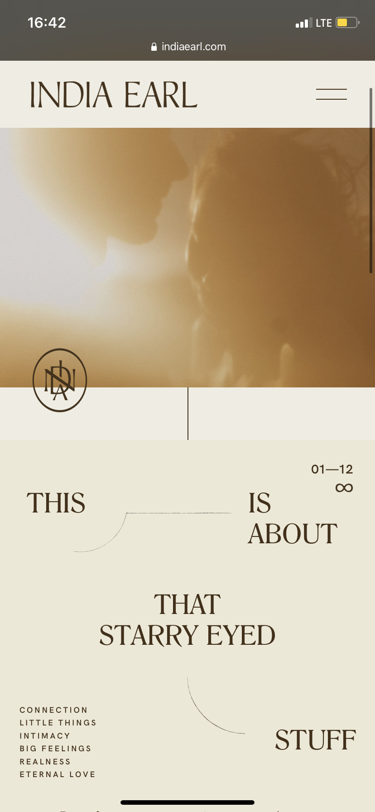
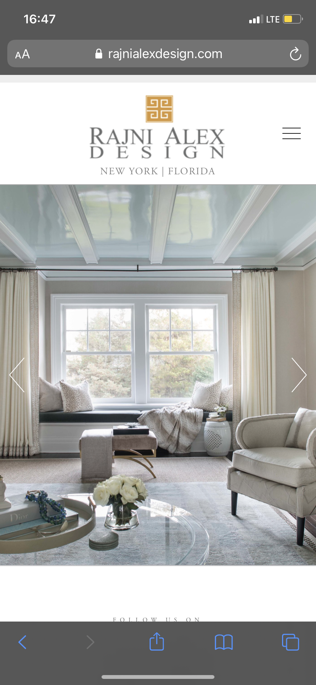
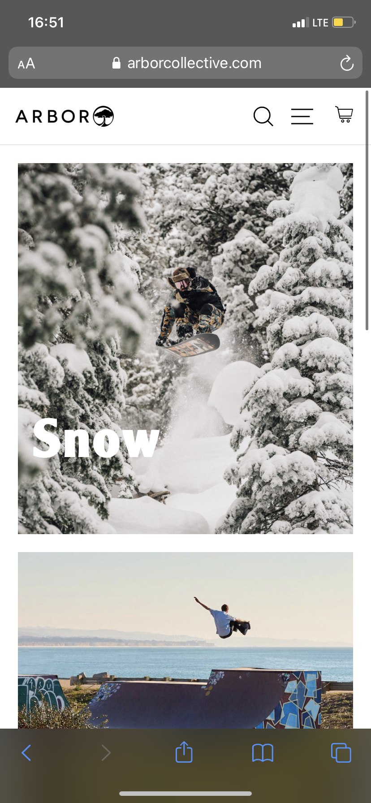

Proximity
India Earl Photography
Link
This design allows the eye travel in an organized, non-chaotic manner. Related words are grouped together, and tied to other related words by the use of space and actual lines. Information is beautifully organized by the use of intentional white space.
White Space and Clean Design
Rajni Alex Design
Link
This design is very effective because it clean, and has only necassary elements. For an interior designer's site, the design is especially effective because it eliminates all complexity from the design, except for the photos; which allows the photos to really stand out. Simple fonts are used, with quite a bit of white Space surrounding it in order to communicate a sense of peace and organization.
Repetition
Arbor Collective
Link
The use of similar, but different blocks defining different sectors of the site's organization is very clean and appealing to the eye. It lays out the site's structure in an understandable way for the user. Also the use of similar fonts, photo color grades, and interactive responses aid the site to come together as one through repitition.